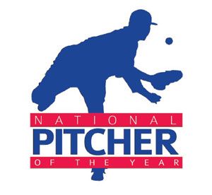
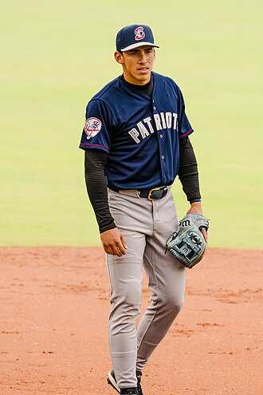
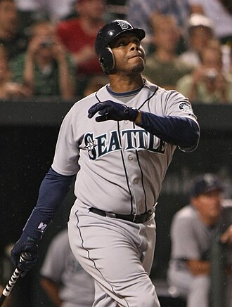
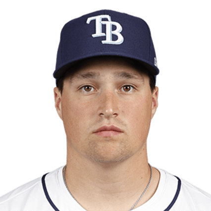
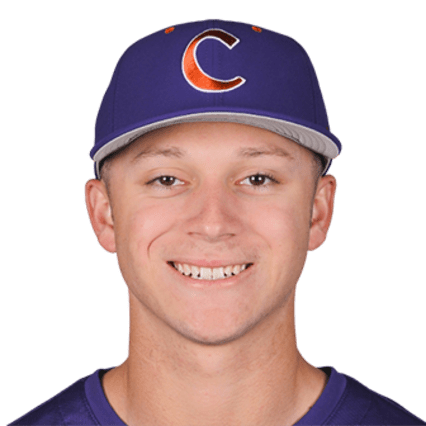
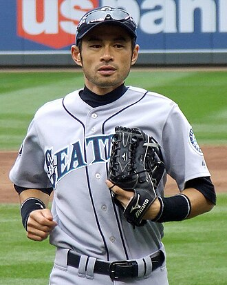
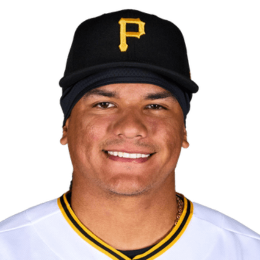
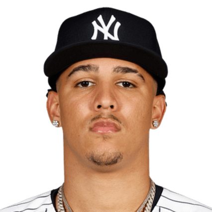

BASE KEEP
The Keep · The Diamond · The Farm
Prospects · top 100
The Farm
Top 100 names still on a prospect clock: minor-league or MLB rookies with 142 career games or fewer. Mean of MLB Pipeline, Baseball America, ESPN Kiley McDaniel, Sports Illustrated, and FanGraphs. Unranked on a board is a skip. Every row has a photo, an estimated arrival year, and the best path to playtime.
| BK | Player | Pos | Team | Level | MLB G | Arrival | Path | Pipeline | Boards | BK Value |
|---|---|---|---|---|---|---|---|---|---|---|
| 1 |  Jesús Madeage 19 Jesús Madeage 19 | SS | MIL | AA | 0 | 2027 | Win short in Milwaukee when the veterans age out. Everyday job, 2027. | 1 | 5 | 12,000 |
| 2 |  Leo De Vriesage 19 Leo De Vriesage 19 | SS | ATH | AA | 0 | 2027 | Open 2027 as the Athletics' shortstop. The bat is ready first. | 2 | 5 | 10,873 |
| 3 |  Franklin Ariasage 20 Franklin Ariasage 20 | SS | BOS | AAA | 0 | 2027 | Take the vacated infield after the Mayer trade. Triple-A cup, then Fenway. | 3 | 5 | 10,228 |
| 4 |  Kade Andersonage 22 Kade Andersonage 22 | LHP | SEA | MLB | 1 | 2026 | Saturday start already on the tape. Earn a rotation seat behind the vets. | 5 | 5 | 9,769 |
| 5 |  Eli Willitsage 18 Eli Willitsage 18 | SS | WSH | A+ | 0 | 2028 | High-A now, full-season test in 2027, everyday short by 2028. | 4 | 5 | 9,409 |
| 6 |  Josue De Paulaage 21 Josue De Paulaage 21 | OF | LAD | AA | 0 | 2027 | Force a corner job when the outfield logjam breaks. September 2026 is possible. | 6 | 5 | 9,111 |
| 7 |  Seth Hernandezage 20 Seth Hernandezage 20 | RHP | PIT | A+ | 0 | 2028 | Oblique rest, then Double-A in 2027. Rotation piece once the innings stack. | 7 | 5 | 8,855 |
| 8 |  Sebastian Walcottage 20 Sebastian Walcottage 20 | SS | TEX | AA | 0 | 2027 | Elbow is the gate. Healthy spring, then the Rangers infield. | 9 | 5 | 8,629 |
| 9 | SS | TB | Rookie | 0 | 2029 | Complex / low-A in 2027. Rays will not rush a No. 2 pick. | 10 | 5 | 8,426 | |
| 10 |  Ryan Sloanage 20 Ryan Sloanage 20 | RHP | SEA | AA | 0 | 2027 | Seattle can wait. Debut 2027 when a rotation slot opens. | 8 | 5 | 8,241 |
| 11 |  Roch Cholowskyage 21 Roch Cholowskyage 21 | SS | CWS | A+ | 0 | 2027 | High-A now. White Sox can promote fast if the bat holds. | 11 | 5 | 8,070 |
| 12 |  Max Clarkage 21 Max Clarkage 21 | OF | DET | MLB | 18 | 2026 | Already up. Keep the center-field job through the walk-rate dip. | 18 | 5 | 7,912 |
| 13 |  Walker Jenkinsage 21 Walker Jenkinsage 21 | OF | MIN | AAA | 0 | 2027 | Stay healthy at Triple-A, then take a Twins outfield corner. | 14 | 5 | 7,764 |
| 14 |  Ethan Salasage 20 Ethan Salasage 20 | C | SD | AAA | 8 | 2027 | Best defensive catcher in the minors. Share September, then the job. | 23 | 5 | 7,624 |
| 15 |  Ethan Hollidayage 19 Ethan Hollidayage 19 | SS | COL | A | 0 | 2029 | Foot has to heal. Full 2027 season, then third base in Colorado. | 16 | 5 | 7,492 |
| 16 |  George Lombard Jr.age 21 George Lombard Jr.age 21 | SS | NYY | MLB | 14 | 2026 | Keep the Yankees infield job. Strikeouts have to stay down. | 22 | 5 | 7,367 |
| 17 |  Luis Peñaage 19 Luis Peñaage 19 | SS | MIL | AA | 0 | 2028 | Second base if Made sticks at short. Everyday bat by 2028. | 17 | 5 | 7,247 |
| 18 |  Mike Sirotaage 23 Mike Sirotaage 23 | OF | LAD | AA | 0 | 2027 | Walks force a call-up. Corner or fourth-outfielder path in L.A. | 20 | 5 | 7,132 |
| 19 | C | MIN | A | 0 | 2029 | Franchise catcher track. Full-season catching in 2027. | 19 | 5 | 7,023 | |
| 20 |  Alfredo Dunoage 20 Alfredo Dunoage 20 | C | CIN | AA | 0 | 2027 | Power catcher. Double-A finish, then Cincinnati in 2027. | 24 | 5 | 6,917 |
| 21 |  Caleb Bonemerage 20 Caleb Bonemerage 20 | SS | CWS | AA | 0 | 2027 | 31-homer leap. Take an infield seat when Chicago turns the page. | 26 | 5 | 6,815 |
| 22 |  Josuar Gonzalezage 18 Josuar Gonzalezage 18 | SS | SF | A | 0 | 2029 | Five-tool short. Full-season 2027, Giants infield later. | 28 | 5 | 6,717 |
| 23 |  Ralphy Velazquezage 21 Ralphy Velazquezage 21 | 1B | CLE | AAA | 4 | 2027 | First-base job when the Guardians need the bat. Triple-A is done. | 30 | 5 | 6,621 |
| 24 |  Theo Gillenage 20 Theo Gillenage 20 | OF | TB | AA | 0 | 2028 | Aggressive Rays promote. Center if the arm plays. | 12 | 5 | 6,529 |
| 25 |  Jamie Arnoldage 22 Jamie Arnoldage 22 | LHP | ATH | AA | 0 | 2027 | Three plus pitches. Athletics rotation as soon as 2027. | 32 | 5 | 6,440 |
| 26 |  Kendry Chourioage 18 Kendry Chourioage 18 | RHP | KC | A+ | 0 | 2029 | Teenage strike-thrower. Slow climb, then Kansas City rotation. | 34 | 5 | 6,353 |
| 27 |  Felnin Celestenage 20 Felnin Celestenage 20 | SS | SEA | AA | 0 | 2028 | Survive Double-A. Everyday short if the bat comes with him. | 50 | 5 | 6,268 |
| 28 |  Eduardo Quinteroage 20 Eduardo Quinteroage 20 | OF | LAD | A+ | 0 | 2028 | Speed/on-base outfielder. High-A now, L.A. depth later. | 36 | 5 | 6,186 |
| 29 |  Thomas Whiteage 21 Thomas Whiteage 21 | LHP | MIA | AAA | 0 | 2027 | Shoulder rest. 2027 rotation if the slider comes back. | 38 | 5 | 6,105 |
| 30 |  Aidan Millerage 22 Aidan Millerage 22 | SS | PHI | AAA | 0 | 2028 | Back injury ate 2026. Healthy Triple-A, then the Phillies. | 66 | 5 | 6,027 |
| 31 |  Anthony Eyansonage 21 Anthony Eyansonage 21 | RHP | BAL | AA | 0 | 2027 | Deadline arm. Orioles rotation after a Double-A finish. | 49 | 5 | 5,951 |
| 32 |  Liam Doyleage 22 Liam Doyleage 22 | LHP | STL | AA | 0 | 2027 | 100-mph lefty. Walks have to drop before St. Louis trusts him. | 46 | 5 | 5,876 |
| 33 |  Drew Burressage 21 Drew Burressage 21 | OF | ATH | A | 0 | 2028 | College bat in A-ball. Center field if the hit tool travels. | 41 | 5 | 5,803 |
| 34 |  Kaelen Culpepperage 23 Kaelen Culpepperage 23 | SS | MIN | MLB | 10 | 2026 | Already up. Keep the infield job through the first 50 games. | 40 | 5 | 5,732 |
| 35 |  Jackson Floraage 21 | RHP | SF | Rookie | 0 | 2028 | No. 4 pick. Full-season innings in 2027, then the Giants. | 31 | 5 | 5,662 |
| 36 |  Roldy Britoage 19 Roldy Britoage 19 | 2B | COL | A+ | 0 | 2029 | Switch-hit speed. Second or outfield, Coors helps the bat. | 44 | 5 | 5,593 |
| 37 |  Gage Woodage 22 Gage Woodage 22 | RHP | PHI | AA | 0 | 2027 | Upper-90s. Secondaries have to play before Citizens Bank. | 33 | 5 | 5,526 |
| 38 | SS | SF | A | 0 | 2030 | 17-year-old short. Patience. Everyday tools if the body fills. | 27 | 5 | 5,460 | |
| 39 |  Jacob Lombardage 18 | SS | MIA | A | 0 | 2030 | Prep short. Marlins will wait. Everyday infield by 2030. | 67 | 5 | 5,396 |
| 40 |  Rainiel Rodriguezage 19 Rainiel Rodriguezage 19 | C | STL | AA | 0 | 2028 | Raw power. Catch if the glove holds, first base if it does not. | 48 | 5 | 5,333 |
| 41 |  Samuel Basalloage 21 Samuel Basalloage 21 | C | BAL | AAA | 15 | 2026 | Lefty power catcher already tasting Baltimore. Win the job. | 29 | 5 | 5,271 |
| 42 |  Andrew Painterage 23 Andrew Painterage 23 | RHP | PHI | AAA | 0 | 2027 | Health is everything. Healthy 2027, then the Phillies. | 69 | 5 | 5,210 |
| 43 |  Colt Emersonage 20 Colt Emersonage 20 | SS | SEA | AA | 0 | 2027 | Mariners short. Double-A finish, then a 2027 look. | 45 | 5 | 5,150 |
| 44 |  Angel Genaoage 22 Angel Genaoage 22 | SS | CLE | MLB | 13 | 2026 | Switch-hit short already in Cleveland. Hold the everyday seat. | 54 | 5 | 5,091 |
| 45 | Christian Zazuetaage 19 | RHP | LAD | A+ | 0 | 2029 | Biggest BA riser. Deep Dodgers pitching queue, then a look. | 36 | 5 | 5,033 |
| 46 |  Edward Florentinoage 19 Edward Florentinoage 19 | OF | PIT | A+ | 0 | 2029 | Power-first outfielder. Average has to catch the homers. | 52 | 5 | 4,976 |
| 47 |  Cam Caminitiage 20 Cam Caminitiage 20 | LHP | ATL | AA | 0 | 2028 | Prep lefty. Atlanta can wait. Rotation after a full Double-A year. | 58 | 5 | 4,920 |
| 48 |  Zyhir Hopeage 20 Zyhir Hopeage 20 | OF | DET | A+ | 0 | 2028 | BA riser. Corner bat with plus speed. Tigers outfield 2028. | 55 | 5 | 4,865 |
| 49 |  Arjun Nimmalaage 20 Arjun Nimmalaage 20 | SS | LAA | AA | 0 | 2028 | Deadline prize. Power infield if he stays at short. | 56 | 5 | 4,811 |
| 50 |  JoJo Parkerage 20 JoJo Parkerage 20 | SS | TOR | A+ | 0 | 2029 | Franchise short profile. High-A now, Toronto later. | 60 | 5 | 4,758 |
| 51 | SS | MIA | AA | 0 | 2028 | Health is the path. Healthy 2027, then Miami infield. | 62 | 5 | 4,706 | |
| 52 |  Eric Booth Jr.age 18 | OF | BAL | A | 0 | 2030 | Speed/center. Full-season 2027, Baltimore outfield later. | 40 | 5 | 4,654 |
| 53 |  Bryce Rainerage 21 Bryce Rainerage 21 | SS | DET | A+ | 0 | 2028 | Lefty power. Third base if short fills up in Detroit. | 64 | 5 | 4,603 |
| 54 | Robbie Snellingage 22 | LHP | MIA | MLB | 1 | 2027 | Internal brace. 2027 innings, then a Marlins rotation seat. | 68 | 5 | 4,553 |
| 55 |  Josiah Hartshornage 20 Josiah Hartshornage 20 | OF | CHC | A+ | 0 | 2028 | Cubs outfield depth. Extra-base power has to stick. | 39 | 5 | 4,504 |
| 56 |  Eric Hartmanage 21 Eric Hartmanage 21 | OF | ATL | AA | 0 | 2028 | Atlanta outfield is crowded. Force it with the bat. | 42 | 5 | 4,455 |
| 57 |  Dax Kilbyage 19 Dax Kilbyage 19 | SS | NYY | A | 0 | 2029 | Hit tool first. Move off short, then a Yankees infield seat. | 70 | 5 | 4,408 |
| 58 |  Jhonny Levelage 20 Jhonny Levelage 20 | SS | SF | A+ | 0 | 2029 | Middle-infield utility first, everyday if the hit tool jumps. | 47 | 5 | 4,360 |
| 59 |  Caden Bodineage 22 | C | TB | A+ | 0 | 2028 | Rays catching development. Share, then the job. | 51 | 5 | 4,314 |
| 60 | Zach Rootage 21 | LHP | LAD | AA | 0 | 2028 | Dodgers lefty depth. Wait behind the big-league staff. | 76 | 5 | 4,268 |
| 61 |  Tyler Bellage 21 Tyler Bellage 21 | SS | COL | A | 0 | 2029 | No. 10 pick. Coors will help. Full-season 2027. | 64 | 5 | 4,223 |
| 62 |  Jurrangelo Cijntjeage 22 Jurrangelo Cijntjeage 22 | RHP | SEA | AA | 0 | 2027 | Switch-throw novelty, real stuff. Seattle rotation depth. | 61 | 5 | 4,178 |
| 63 |  Jonah Tongage 23 Jonah Tongage 23 | RHP | NYM | AAA | 6 | 2026 | Triple-A punchouts. Mets rotation as soon as a slot opens. | 63 | 5 | 4,134 |
| 64 |  Braylon Doughtyage 20 Braylon Doughtyage 20 | RHP | CLE | A+ | 0 | 2028 | Guardians riser. Mid-rotation if the slider holds. | 88 | 5 | 4,091 |
| 65 |  Cam Cannarellaage 22 | OF | MIA | A+ | 0 | 2028 | BA add. College bat, Marlins outfield if the average holds. | 72 | 5 | 4,048 |
| 66 | Derek Curielage 21 | OF | PIT | A | 0 | 2029 | No. 5 pick. Pirates outfield after a healthy full season. | 91 | 5 | 4,006 |
| 67 |  Bubba Chandlerage 23 Bubba Chandlerage 23 | RHP | PIT | AAA | 8 | 2026 | Pirates need innings. Triple-A polish, then the rotation. | 65 | 5 | 3,964 |
| 68 | Angeibel Gomezage 19 | OF | KC | A | 0 | 2029 | Complex-league flyer. Royals outfield depth. | 74 | 5 | 3,923 |
| 69 |  Juneiker Caceresage 18 Juneiker Caceresage 18 | OF | CLE | A | 0 | 2029 | Guardians outfield tools. Slow climb. | 90 | 5 | 3,882 |
| 70 |  Gio Rojasage 21 | LHP | TEX | A | 0 | 2029 | Prep lefty. Rangers can stash him behind the current rotation. | 97 | 5 | 3,842 |
| 71 |  Cristian Arguellesage 18 Cristian Arguellesage 18 | OF | COL | Rookie | 0 | 2030 | Teen outfielder. Long runway in Colorado. | 78 | 5 | 3,803 |
| 72 |  Emmanuel Rodriguezage 23 Emmanuel Rodriguezage 23 | OF | MIN | AAA | 2 | 2027 | On-base monster. Twins outfield when a corner clears. | 71 | 5 | 3,764 |
| 73 |  Alexander Friasage 18 Alexander Friasage 18 | OF | STL | Rookie | 0 | 2030 | Cardinals international stash. Tools first. | 80 | 5 | 3,725 |
| 74 |  Moises Ballesterosage 22 Moises Ballesterosage 22 | C | CHC | AAA | 20 | 2026 | Bat-first catcher. Share with the incumbent, then DH/C. | 73 | 5 | 3,687 |
| 75 | Charles Davalanage 20 | OF | LAD | A | 0 | 2029 | Another Dodgers outfielder. Need a trade or injury to play. | 82 | 5 | 3,650 |
| 76 |  Chase Burnsage 23 Chase Burnsage 23 | RHP | CIN | MLB | 22 | 2026 | Already helping Cincinnati. Keep the rotation seat. Rookie-limit games. | - | 2 | 3,613 |
| 77 |  Harry Fordage 23 Harry Fordage 23 | C | SEA | AAA | 0 | 2027 | Catch-and-throw. Seattle catching job after a Triple-A year. | 75 | 5 | 3,576 |
| 78 |  Marek Houstonage 21 Marek Houstonage 21 | SS | MIN | A | 0 | 2028 | Twins infield depth behind Culpepper and Jenkins. | 84 | 5 | 3,540 |
| 79 |  Kevin Alvarezage 19 Kevin Alvarezage 19 | OF | HOU | A | 0 | 2029 | Astros speed. Center-field path if the hit tool comes. | 86 | 5 | 3,504 |
| 80 |  Cam Collierage 21 Cam Collierage 21 | 3B | CIN | AA | 0 | 2028 | Lefty power corner. Reds third if the glove sticks. | 77 | 5 | 3,469 |
| 81 |  Josue Bricenoage 21 Josue Bricenoage 21 | C | DET | AA | 0 | 2028 | Tigers catching depth. Share, then the job. | 79 | 5 | 3,434 |
| 82 |  Owen Caissieage 23 Owen Caissieage 23 | OF | CHC | AAA | 3 | 2027 | Triple-A power. Cubs corner when a veteran sits. | 81 | 5 | 3,399 |
| 83 |  Colson Montgomeryage 24 Colson Montgomeryage 24 | SS | CWS | MLB | 40 | 2026 | White Sox short. Keep the everyday job under the 142-game cap. | - | 2 | 3,365 |
| 84 |  Jac Caglianoneage 23 Jac Caglianoneage 23 | OF | KC | MLB | 55 | 2026 | Royals bat. Everyday corner if the average holds. | - | 2 | 3,331 |
| 85 |  Kevin Alcantaraage 23 Kevin Alcantaraage 23 | OF | CHC | AAA | 5 | 2027 | Tools outfielder. Fourth outfielder first, then more. | 83 | 5 | 3,298 |
| 86 |  Travis Bazzanaage 23 Travis Bazzanaage 23 | 2B | CLE | AAA | 0 | 2027 | No. 1 pick path. Guardians second when the job opens. | 85 | 5 | 3,265 |
| 87 |  Kristian Campbellage 24 Kristian Campbellage 24 | 2B | BOS | MLB | 90 | 2026 | Already up. Hold second in Boston under the games cap. | - | 2 | 3,233 |
| 88 |  Jaison Chourioage 20 Jaison Chourioage 20 | OF | CLE | AA | 0 | 2028 | Switch-hit outfielder. Cleveland depth, then a corner. | 87 | 5 | 3,201 |
| 89 |  Lazaro Montesage 21 Lazaro Montesage 21 | OF | SEA | AA | 0 | 2028 | Huge frame, raw power. Mariners DH/corner if he hits. | 89 | 5 | 3,169 |
| 90 |  Termarr Johnsonage 21 Termarr Johnsonage 21 | 2B | PIT | AA | 0 | 2028 | Hit tool. Pirates second if the power ticks up. | 92 | 5 | 3,138 |
| 91 |  Jhostynxon Garciaage 23 | OF | BOS | AAA | 4 | 2027 | Red Sox outfield depth. September look, then a job. | 93 | 5 | 3,106 |
| 92 |  Jonny Farmeloage 21 Jonny Farmeloage 21 | OF | SEA | A+ | 0 | 2028 | Center-field speed. Health first, then Seattle. | 94 | 5 | 3,076 |
| 93 |  Jordan Lawlarage 23 Jordan Lawlarage 23 | SS | ARI | MLB | 70 | 2026 | Already on the Diamondbacks. Keep the infield job. | - | 2 | 3,046 |
| 94 |  Carlos Lagrangeage 22 | RHP | NYY | AA | 0 | 2028 | Yankees arm. Wait behind the big-league staff. | 98 | 3 | 3,016 |
| 95 |  Rhett Lowderage 24 Rhett Lowderage 24 | RHP | CIN | AAA | 8 | 2026 | Reds innings. Rotation as soon as he is stretched out. | - | 2 | 2,986 |
| 96 |  Tyler Bremnerage 22 Tyler Bremnerage 22 | RHP | LAA | A+ | 0 | 2028 | BA faller, still stuff. Angels rotation depth. | 96 | 4 | 2,957 |
| 97 |  Coby Mayoage 24 Coby Mayoage 24 | 3B | BAL | MLB | 85 | 2026 | Orioles corner. Everyday if the strikeouts settle. | - | 2 | 2,928 |
| 98 |  Brody Hopkinsage 24 Brody Hopkinsage 24 | RHP | TB | AAA | 0 | 2027 | Rays pitching factory. Spot start, then a job. | 99 | 3 | 2,899 |
| 99 |  Cam Schlittlerage 23 Cam Schlittlerage 23 | RHP | NYY | MLB | 12 | 2026 | Yankees innings. Rotation if the command holds. | 95 | 5 | 2,871 |
| 100 |  Kumar Rockerage 26 Kumar Rockerage 26 | RHP | TEX | MLB | 20 | 2026 | Rangers starter. Keep the job under the games cap. | - | 2 | 2,843 |
Farm value graph
BK Value, top 12
Rank 1 is 12,000. The curve decays so mid-board names still trade, they just do not trade like 1.01.
Sources
Prospect boards in this aggregate
- MLB Pipeline in-season 100 - Midseason refresh after the draft and deadline. Made is 1.01.
- Baseball America August 100 - Final in-season 100, Aug 5. Risers and 2026 draftees.
- ESPN Kiley McDaniel - Long-term FV board. Rookie-eligible names only.
- Sports Illustrated midseason 50 - Ryan Phillips, Aug 21. Top 50 with ETAs.
- FanGraphs The Board - FV / The Board mix on the same names.
Five public prospect lists, midseason / August 2026. Unranked names are skipped in the mean - never treated as 999. Eligibility is 142 MLB games or fewer.
FAQ
How The Farm is built.
What is The Farm?
BaseKeep's top 100 prospects. Five boards: MLB Pipeline in-season 100, Baseball America August 100, ESPN Kiley McDaniel, Sports Illustrated midseason 50, and FanGraphs The Board.
Who qualifies?
Minor-league names and MLB rookies with 142 career games or fewer. Graduates over that cap drop off. Unranked on a board is a skip, not a last-place dump.
What is arrival and path?
Estimated arrival is the year the name is most likely to stick. Path is the cleanest route to everyday playtime: the job, the blocker, and the level in front of them.